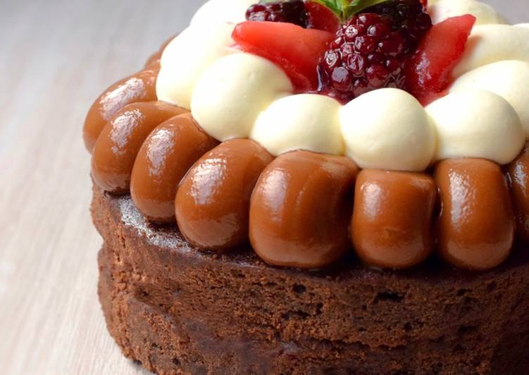

Brownie con cacao

| Ingredientes |
Cantidades |
| Manteca |
150 gr. |
| Azucar |
200 gr. |
| Huevos |
3 |
| Escencia de vainilla |
1 cucharita |
| Harina |
65 gr. |
| Cacao amargo |
80 gr. |
| Sal |
1 pizca |
- Derretir a baño María la manteca junto con el azúcar
- Cuando la Manteca esté derretida y a temperatura ambiente, agregar la esencia de vainilla y los huevos de a 1 a la vez.
- Mezclar bien hasta incorporarlos
- Agregar la harina, el cacao amargo y la pizca de sal.
- Mezclar todo hasta que los secos se hayan integrado bien.
- Enmantecar y harinar una placa de 20cm
- Volcar la preparación sobre la placa de 20 cm. Cocinar en horno medio por 15 min aprox
Receta de: Pasteleria.facil